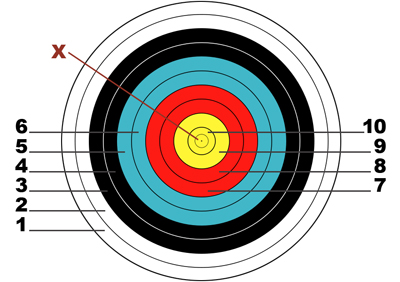
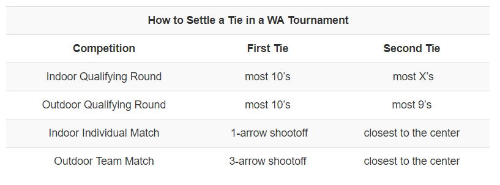

How do WA targets work?
Targets are one of the most distinctive and important parts of archery. Many archers remember what it felt like to shoot their very first bull’s-eye. It can be a very exciting and dramatic moment, giving the archer a sense of accomplishment and earning smiles all around. Many archers also remember how eager they were to put another arrow on the string and try hitting the center of the target just one more time. Throughout history archers from every background and shooting at all kinds of targets, have written of this feeling and the way they get swept along by excitement on their lifelong quest for accuracy.
Today, target archers all across the globe compete using the same type of target with a distinctive yellow bull’s-eye. This was officially adopted in the 1930’s by the World Archery Federation or WA when it was still known as the Fédération Internationale de Tir à l’Arc or FITA. It is important for all archers to compete with the same kind of target because it assures a level playing field for all.
The standard WA target consists of ten rings in five colors.

Within the 10-ring you will find a smaller ring with an “X” marked at the center. This is known as the X-ring. For compound shooters at indoor tournaments, it becomes the 10-ring and the rest of the gold area becomes the 9-ring.
When an arrow hits a line between scoring rings, it automatically earns the higher point. Remember, it isn’t the hole in the target, but the arrow itself that must be touching the line. If archers cannot agree on whether the arrow is touching the line, they will ask for the help of a judge who can “call the line-cutter” to decide the score. In order to keep tournaments running on time, a judge’s decision on line-cutter arrows is final and cannot be appealed.
When archers shoot the same score there are a number of ways to break the tie, depending on the type of competition. During a shootoff, the two archers involved will be the only ones on the shooting line. Officials put the tournament on hold so the competitors may decide the tie-breaker before shooting resumes. In situations where the archers are still tied after a shootoff, judges will measure the distance from the arrow to the center of the target to determine the winner.

#Article from Discover Archery
Read More
> Basic Safety for Every Archer> Shooting with a Whistle System in Practice and Competition
> How do I Score My Arrows at Target Archery Tournaments?